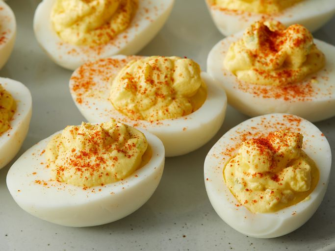

Devil Eggs
home

Description
Sinfully creamy, devilishly delicious, and guaranteed to tempt even
the most virtuous snackers. These Deviled Eggs are pure little bites of mischief!
Ingredients
- 6 large free-range eggs, at room temperature
- 4 tsp mayonnaise
- 1-2 tsp English mustard
- Few drops of Tabasco
- 2 tbsp extra virgin olive oil
- 2-3 tbsp water from a freshly boiled kettle
Step by Step Guide
- Bring some water to the boil in a large saucepan and, once it’s boiling, add the eggs, one by one, into the pan and bring back to the boil. Boil for 1 minute, then turn the heat off and leave the eggs to stand in the pan for 12 minutes.
- While you’re waiting for the eggs to cook, fill a large bowl with very cold water, and throw in a handful of ice cubes if you have them. As soon as the eggs have had their 12 minutes, spoon them into the cold water and leave for 15 minutes – no longer – before peeling patiently and carefully.
- Halve the eggs lengthways and gently prise the yolk out of each half and pop them into a mixing bowl. Place the neatest looking 18 halved whites on a plate or two
- Add the mayonnaise, a teaspoon of English mustard, the salt and paprika to the egg yolks, and shake a few drops of Tabasco on top. Stir and mash with a fork, then blend with a stick blender or in a food processor. Add the oil and blend again until smooth. It will be very thick. Check for seasoning and also taste to see if you want this hotter. I generally go up to 2 teaspoons of mustard and quite a bit more Tabasco, but it’s best to proceed slowly. Now, by hand, stir in as much of the water as you need to help form a piping consistency
- Spoon the golden mixture into a piping bag with a star icing nozzle, making sure it is densely packed at the bottom of the bag. Then pipe away, filling the hollowed-out whites with golden rosettes. Or you can mound the yolk mixture using a pair of teaspoons. Sprinkle with paprika and chopped chives and serve with a flourish.